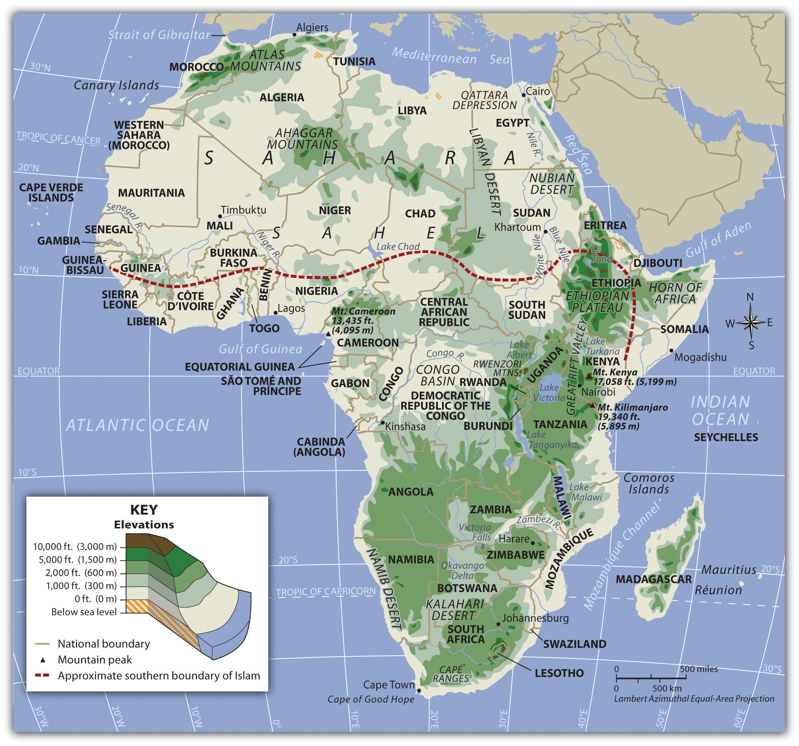
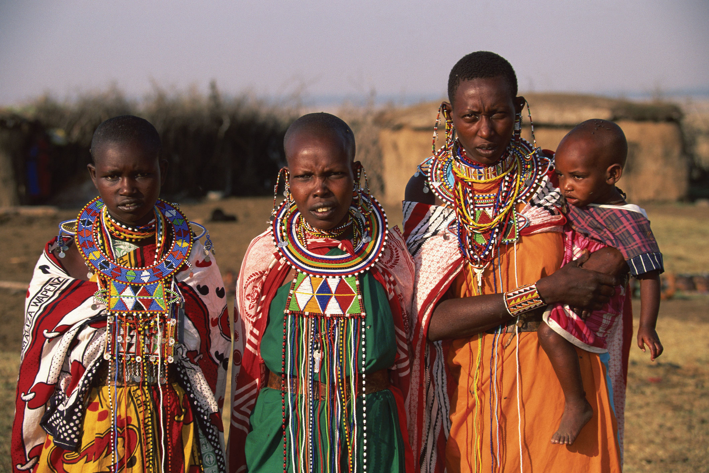
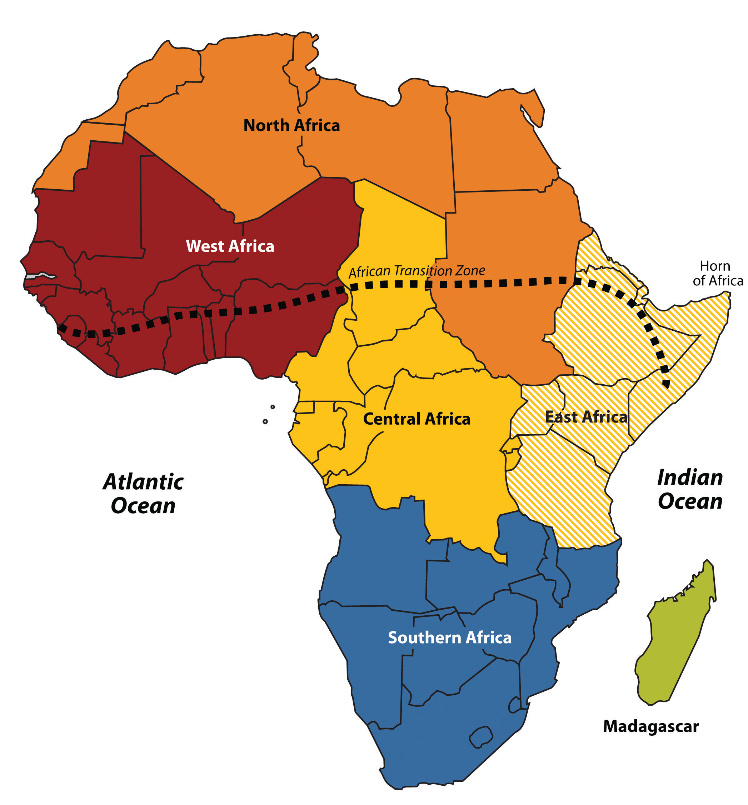
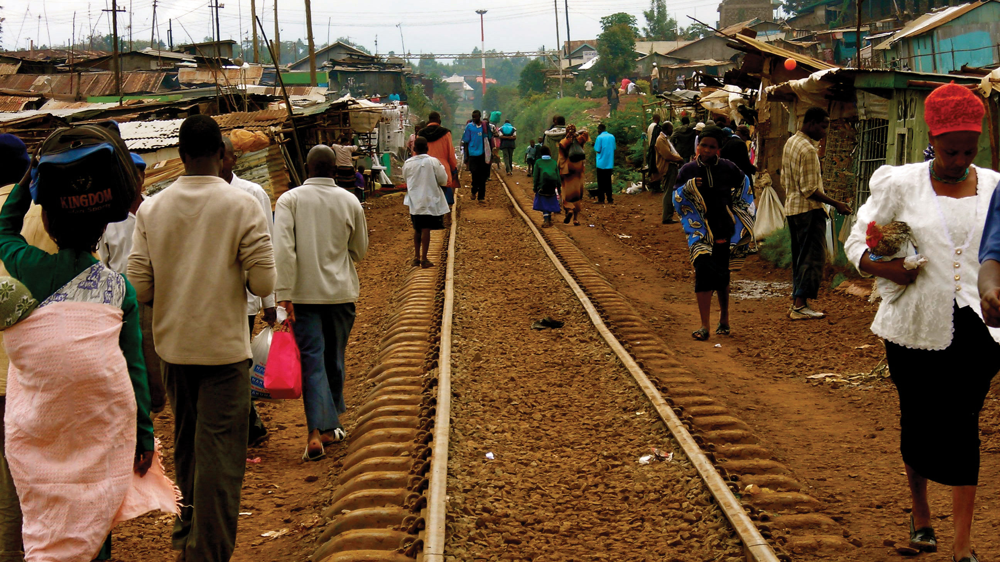
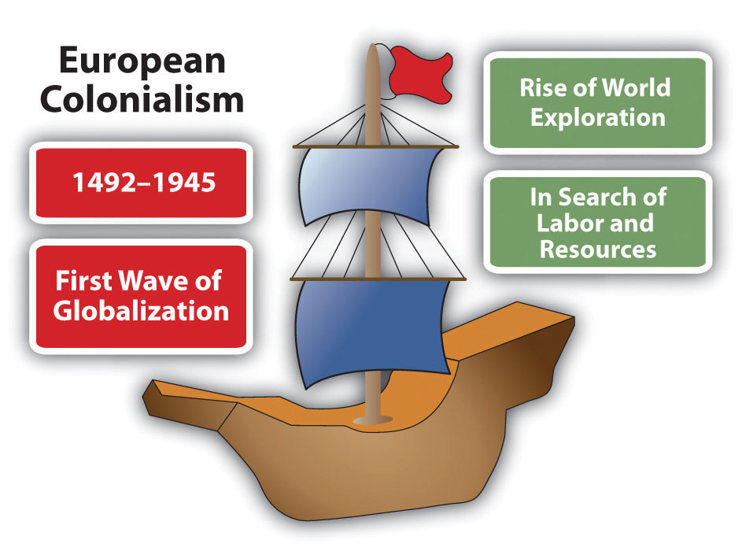

At a Glance
At a Glance
Learning Outcomes
- Describe: The physical geography of the "Plateau Continent," including the Great Rift Valley and major river systems.
- Analyze: The lasting effects of the Berlin Conference and colonial borders on modern political and ethnic tensions.
- Explain: The concept of the "Demographic Dividend" and its implications for Sub-Saharan Africa's economic future.
- Evaluate: The relationship between natural resource wealth and the "Resource Curse" in African development.
- Assess: The Great Green Wall as a geographic response to desertification and climate change.
Key Terms
Sahel, Great Rift Valley, Escarpment, Berlin Conference, Scramble for Africa, Centrifugal Force, Demographic Dividend, Dual Economy, Informal Sector, Desertification, Resource Curse, Apartheid, Pan-Africanism, Bantu Migration.
Stop & Check
Reveal Answer
Common Misconception
Myth: Sub-Saharan Africa is mostly jungle and rainforest.
Fact: The majority of the region is actually savanna (tropical grassland) or semi-arid steppe. Dense tropical rainforest is concentrated primarily in the Congo Basin of Central Africa. Savannas, deserts, and highlands collectively cover far more of the continent's surface area.
Regional Snapshot: Africa South of the Sahara
Sub-Saharan Africa is a region of immense potential and complex challenges. Comprising 48 nations across an area three times the size of the continental United States, it contains some of the world's fastest-growing economies and its most youthful population. Geographically, it is defined by expansive interior plateaus, the dramatic tectonic forces of the Great Rift Valley, the vast Congo Basin rainforest, and the fragile Sahel transition zone. Understanding this region requires moving beyond simplistic narratives of poverty and conflict to engage with the intricate interplay of physical geography, colonial history, demographic transformation, and resource politics that shapes contemporary Africa.

Interactive Map: The African Plateaus
Explore the Great Rift Valley, the Congo Basin, and the semi-arid Sahel. Zoom in to see the locations of rising megacities like Lagos, Kinshasa, and Nairobi. Toggle between physical terrain and political boundaries to observe how colonial-era borders often cut across natural geographic regions.
Toggle between Physical terrain and Political boundaries. Notice the large number of landlocked states (16 in total), a major geographic challenge for trade and economic development. Landlocked nations must rely on neighbors for port access, adding significant transportation costs.
Physical Geography: Rifts, Basins, and Transitions
Africa's physical geography is distinctive among the world's continents. It lacks the massive linear mountain chains found in the Americas (Andes) or Asia (Himalayas), and its coastline is remarkably smooth, with few peninsulas, bays, or natural harbors. Instead, the continent is defined by its expansive plateaus, deep rift valleys, enormous river basins, and a dramatic gradient of climate zones stretching from equatorial rainforest to hyper-arid desert. These physical characteristics have profoundly shaped human settlement, economic development, and the region's interaction with the outside world.
The Plateau Continent
Africa is frequently described as the "Plateau Continent" because much of its landmass consists of elevated, relatively flat surfaces averaging 600 meters or more above sea level. Unlike continents shaped by recent tectonic collisions (such as Asia's Himalayan uplift or South America's Andean folding), Africa sits on an ancient, stable continental shield known as a craton. The African Plate has remained relatively stationary for hundreds of millions of years, and the result is a landscape dominated by broad, weathered plateaus rather than towering young mountain ranges.
The edges of these plateaus are marked by steep escarpments, places where the elevated interior drops sharply to narrow coastal lowlands. The Drakensberg Escarpment in southern Africa rises over 3,000 meters, forming a dramatic wall between the interior highveld and the coastal lowlands of KwaZulu-Natal. These escarpments have had enormous geographic consequences. Rivers flowing from the interior plunge over waterfalls and rapids as they approach the coast, making them unnavigable for long stretches. The Congo River, for example, drops through a series of 32 cataracts in its final 350 kilometers before reaching the Atlantic, a barrier that prevented European explorers from penetrating the interior for centuries. The lack of natural harbors along the smooth coastline further isolated interior populations from maritime trade networks, contributing to the continent's late integration into the global economy.
The Great Rift Valley
The most dramatic feature of East Africa's physical geography is the Great Rift Valley, a massive geological fault system stretching over 6,000 kilometers from the Red Sea in the north through Ethiopia, Kenya, and Tanzania, and southward into Mozambique. The Rift is a zone of active tectonic divergence where the African Plate is slowly splitting into two separate plates: the Nubian Plate to the west and the Somali Plate to the east. Geologists estimate that in approximately 10 million years, this process will create a new ocean basin, effectively splitting the Horn of Africa from the rest of the continent.
The Rift has produced Africa's most spectacular topography. Along its margins rise volcanic peaks that include Mount Kilimanjaro (5,895 meters), the highest point in Africa and the tallest freestanding mountain in the world. Nearby, Mount Kenya (5,199 meters) and the Virunga volcanic chain (home to endangered mountain gorillas) further illustrate the region's tectonic dynamism. The Rift's floor contains some of the world's deepest and most ecologically significant lakes. Lake Tanganyika, at 1,470 meters deep, is the second-deepest lake on Earth and contains an estimated 17% of the world's available surface freshwater. Lake Malawi (also called Lake Nyasa) harbors more fish species than any other lake, with over 1,000 cichlid species found nowhere else. These "African Great Lakes" are critical freshwater resources for the tens of millions of people living along their shores.


Rivers and Water Systems
Africa's major river systems are among the most geographically significant in the world, yet their utility for transportation and commerce has been severely limited by the plateau topography described above. The Niger River, West Africa's principal waterway, follows an unusual boomerang-shaped course through Mali, Niger, and Nigeria before emptying into the Gulf of Guinea through a vast delta. Its inland delta in Mali creates a critical wetland in an otherwise arid landscape, supporting agriculture and fishing for millions. The Congo River drains the second-largest river basin in the world (after the Amazon), carrying the second-highest volume of water of any river on Earth. The Congo Basin receives over 1,500 millimeters of rainfall annually and sustains the world's second-largest tropical rainforest.
The Nile River, shared between North Africa and East Africa, is the longest river in the world (approximately 6,650 kilometers) and originates from two major tributaries: the White Nile, which flows from Lake Victoria in Uganda, and the Blue Nile, which descends from the Ethiopian Highlands. The Nile has been a source of geopolitical tension, particularly as Ethiopia's Grand Ethiopian Renaissance Dam (completed in 2022) controls the flow of the Blue Nile, which provides approximately 85% of the Nile's water during flood season. Egypt, which depends almost entirely on the Nile for its freshwater, views the dam as an existential threat. The Zambezi River in southern Africa is famous for Victoria Falls (known locally as Mosi-oa-Tunya, "The Smoke That Thunders"), one of the largest and most spectacular waterfalls in the world, spanning 1,708 meters wide and plunging 108 meters into a narrow gorge.
Climate Zones and the Sahel
Sub-Saharan Africa's climate follows a remarkably symmetrical pattern centered on the equator, a direct reflection of the continent's position straddling both hemispheres. At the equator, the Congo Basin receives year-round rainfall supporting dense tropical rainforest. Moving north and south from this equatorial core, rainfall becomes increasingly seasonal, transitioning through zones of tropical savanna (wet and dry seasons), semi-arid steppe, and finally true desert. This pattern produces distinct climate belts that run roughly east-west across the continent, each supporting different vegetation, agriculture, and human settlement patterns.
The most geographically significant of these transitional zones is the Sahel, a semi-arid belt stretching approximately 5,400 kilometers across Africa from Senegal and Mauritania in the west to Sudan and Eritrea in the east. The word "Sahel" derives from the Arabic word for "shore" or "coast," reflecting the perception of this zone as the southern shore of the vast Saharan "sea" of sand. The Sahel receives between 200 and 600 millimeters of rainfall annually, enough to support grazing and rain-fed agriculture but insufficient for intensive farming. This marginal environment makes the Sahel extremely vulnerable to desertification, the process by which productive land degrades into desert conditions through a combination of climate variability, overgrazing, deforestation, and unsustainable farming practices. The Sahel is also a cultural transition zone, marking the boundary between predominantly Muslim populations to the north and predominantly Christian and traditional-religion populations to the south, a division that has contributed to conflict in nations like Nigeria, Chad, and Sudan.
Biodiversity and Conservation
Sub-Saharan Africa harbors extraordinary biodiversity. The Congo Basin rainforest, covering approximately 2 million square kilometers across six nations, is often called the "second lung of the Earth" for its role in absorbing atmospheric carbon dioxide. It shelters approximately 10,000 plant species, 1,000 bird species, and 400 mammal species, including forest elephants, bonobos, and lowland gorillas. The East African savannas of Kenya and Tanzania support the world's largest remaining populations of large mammals, including the annual wildebeest migration across the Serengeti-Mara ecosystem, which involves over 1.5 million animals and is considered one of the greatest wildlife spectacles on the planet.
However, Africa's biodiversity faces severe threats. Habitat loss from agricultural expansion, logging, and urbanization reduces wildlife corridors and fragments ecosystems. Poaching driven by international demand for ivory, rhino horn, and bushmeat threatens iconic species. The African elephant population has declined from an estimated 26 million in the early twentieth century to approximately 415,000 today. Conservation efforts include the establishment of national parks and game reserves (Kenya's Maasai Mara, Tanzania's Serengeti, South Africa's Kruger), community-based conservation programs that share tourism revenue with local populations, and international agreements such as CITES (the Convention on International Trade in Endangered Species). The challenge remains balancing conservation with the livelihood needs of rapidly growing human populations that share space with wildlife.
Geographic Inquiry
Sub-Saharan Africa has few natural harbors and many waterfalls near its coasts due to escarpments at the edges of interior plateaus. How did these physical features historically hinder European inland exploration, and how do they continue to affect modern infrastructure costs, trade logistics, and economic development in the region?
Human Geography: Colonial Borders and Dual Economies
The human geography of Sub-Saharan Africa has been profoundly shaped by two overlapping forces: the region's extraordinary internal diversity of languages, ethnicities, and cultures, and the external imposition of colonial borders that disregarded this diversity entirely. Understanding contemporary Africa requires grappling with both of these realities simultaneously, recognizing the continent's deep indigenous heritage while also acknowledging the disruptive legacies of European colonialism that continue to shape political, economic, and social life.
The Berlin Conference and Colonial Legacy
The modern political map of Africa was largely determined at the Berlin Conference of 1884-1885, where representatives of fourteen European powers (and the United States, as an observer) gathered to negotiate the partition of the African continent. Notably, no African leaders were invited to participate. The conference established rules for the Scramble for Africa, a period of rapid European colonization that, within just three decades, brought virtually the entire continent under European control. By 1914, only Ethiopia and Liberia remained independent.
The borders drawn at Berlin and in subsequent colonial treaties were based on European diplomatic convenience, not on African geographic, ethnic, or linguistic realities. Rivers and lines of latitude became national boundaries, cutting through the homelands of ethnic groups and forcing rival communities into single administrative units. The Maasai people, for example, were divided between British Kenya and German Tanganyika (now Tanzania). The Somali people were split among five different colonial territories. These arbitrary borders became powerful centrifugal forces (forces that pull a state apart) in the post-independence era, as ethnic groups that had never considered themselves part of a single political entity were expected to function as unified nations. The consequences have included civil wars (Nigeria's Biafran War, 1967-1970), genocide (Rwanda, 1994), and ongoing separatist movements (Somaliland, Cameroon's Anglophone regions).
The wave of African independence movements that swept the continent in the late 1950s and 1960s brought political sovereignty but did not fundamentally alter these colonial boundaries. The Organization of African Unity (now the African Union), founded in 1963, made the controversial decision to recognize all existing colonial borders as permanent, fearing that any attempt to redraw them would unleash endless conflict. This principle of uti possidetis ("as you possess") has preserved the colonial map largely intact, meaning that the geographic challenges of nation-building within artificial borders remain a defining feature of African politics.


Ethnic, Linguistic, and Religious Diversity
Sub-Saharan Africa is the most linguistically diverse region on Earth, with over 2,000 distinct languages spoken across the continent. Nigeria alone has more than 500 languages, and the Democratic Republic of Congo has over 200. This extraordinary diversity reflects millennia of human migration, isolation in diverse environments, and cultural adaptation. The most significant of these historical migrations was the Bantu Migration, a multi-century expansion of Bantu-speaking peoples from their homeland in the Nigeria-Cameroon border region southward and eastward across the continent, beginning around 1000 BCE. The Bantu brought iron-working technology, agricultural techniques, and a family of closely related languages that today includes Swahili, Zulu, Shona, and hundreds of other languages spoken across central, eastern, and southern Africa.
Religious geography in the region is equally complex. Islam predominates in the Sahel and along the East African coast (spread through trans-Saharan trade and Indian Ocean commerce), while Christianity (introduced through European colonization and earlier Ethiopian Orthodox traditions) is dominant in much of southern, central, and coastal West Africa. Traditional African religions, with their emphasis on ancestor veneration, spirit worlds, and the sacredness of natural features, continue to influence cultural practices even among populations that identify as Christian or Muslim. In many countries, the religious boundary between Islam and Christianity runs through the national territory, creating cultural fault lines. Nigeria, for instance, is roughly divided between a Muslim north and a Christian south, a division that has contributed to tensions including the Boko Haram insurgency in the northeast.
The Demographic Dividend
Sub-Saharan Africa is the youngest region in the world, with a median age of approximately 19 years, compared to 38 in the United States, 43 in Europe, and 48 in Japan. The region's population has grown from approximately 230 million in 1960 to over 1.2 billion today, and the United Nations projects that it will nearly double again to approximately 2.1 billion by 2050. By the end of the twenty-first century, Africa is projected to be home to roughly 40% of the world's population.
This demographic structure presents both an extraordinary opportunity and a significant challenge. The opportunity is the Demographic Dividend, an economic growth acceleration that can occur when a population's working-age share (15-64) increases relative to dependents (children and elderly). East Asian economies (South Korea, Taiwan, Singapore) captured this dividend in the 1960s through 1990s through massive investments in education, healthcare, and export-oriented manufacturing. If Sub-Saharan African nations can similarly invest in their youth (through education, vocational training, and job creation), the demographic dividend could power transformative economic growth. However, if these investments are not made, the same youth population becomes a "youth bulge" that produces unemployment, political instability, and outward migration. The stakes are enormous: Sub-Saharan Africa must create an estimated 18 million new jobs per year simply to keep pace with the number of young people entering the workforce.
Urbanization and Dual Economies
Sub-Saharan Africa is urbanizing faster than any other region in the world. In 1960, only about 15% of the population lived in cities; today, that figure exceeds 40%, and it is projected to surpass 55% by 2050. Lagos, Nigeria, exemplifies this transformation: its metropolitan population has grown from approximately 1 million in 1960 to over 16 million today, and projections suggest it could exceed 30 million by 2050, potentially making it the world's largest city. Other rapidly growing megacities include Kinshasa (DRC), Dar es Salaam (Tanzania), Luanda (Angola), and Nairobi (Kenya).
Unlike the urbanization that accompanied industrialization in Europe and North America, African urbanization is occurring largely without a corresponding industrial base. Most African cities operate as Dual Economies, with a relatively small formal sector of corporate employment, government services, and regulated businesses coexisting alongside a massive Informal Sector of street vendors, micro-enterprises, artisans, and unregistered service providers that employs up to 80% of the urban workforce. This informal economy is both a survival mechanism and a source of innovation. The M-Pesa mobile money platform, launched in Kenya in 2007, revolutionized financial services by allowing millions of unbanked Africans to send, receive, and store money via basic mobile phones. M-Pesa now processes over $300 billion in transactions annually and has been adopted across multiple African countries, demonstrating that African innovation can leapfrog traditional development pathways.
Resource Wealth and the Resource Curse
Sub-Saharan Africa possesses extraordinary mineral and energy wealth. The Democratic Republic of Congo holds approximately 70% of the world's cobalt reserves, a critical mineral for lithium-ion batteries used in electric vehicles and smartphones. Nigeria is Africa's largest oil producer and a member of OPEC. Botswana is the world's second-largest diamond producer by value. South Africa holds vast reserves of platinum, gold, chromium, and manganese. The Sahel and East Africa contain significant deposits of gold, uranium, and natural gas.
Yet, paradoxically, many of Africa's most resource-rich nations also have some of the highest poverty rates, a phenomenon known as the Resource Curse (also called the "paradox of plenty"). Several geographic and political mechanisms explain this pattern. First, resource revenues often flow to a small political elite rather than being broadly distributed, fueling corruption and authoritarianism (Dutch disease occurs when resource exports strengthen a country's currency, making its manufactured goods and agricultural products uncompetitive in international markets, thereby hollowing out the broader economy). Second, competition for control of valuable resources can fuel armed conflict, as seen in the "blood diamond" wars of Sierra Leone and Liberia in the 1990s, and in the ongoing conflict over conflict minerals (coltan, tin, tungsten, gold) in eastern DRC. Third, heavy dependence on a single commodity makes economies vulnerable to price volatility on global markets. Botswana stands as a notable exception to the resource curse: its democratic governance, prudent savings policies, and investment of diamond revenues in education and infrastructure have produced one of Africa's highest standards of living.
Data Exploration: Human Development in Sub-Saharan Africa
The Human Development Index (HDI) measures a country's achievement in health, education, and income on a scale from 0 to 1. Compare HDI scores across selected Sub-Saharan African nations. Notice the dramatic variation within the region, and consider what geographic factors (landlocked vs. coastal, resource wealth, colonial history, political stability) might explain these differences.
Interpretation: Mauritius and South Africa rank significantly higher than Niger and Chad. How do geographic factors (coastline access, climate, mineral resources, and colonial borders) help explain this development gap within a single continent? Notice that island nations (Mauritius) and countries that avoided prolonged civil conflict tend to have higher HDI scores.
The Great Green Wall: Africa's Bold Response to Desertification
The Great Green Wall is one of the most ambitious environmental restoration projects in human history. Launched in 2007 by the African Union, this initiative aims to grow an 8,000-kilometer mosaic of restored landscapes stretching across the full width of the Sahel, from Senegal on the Atlantic coast to Djibouti on the Red Sea. The project's ultimate goal is to restore 100 million hectares of degraded land, sequester 250 million tons of carbon, and create 10 million green jobs by 2030.
The Great Green Wall is not simply a tree-planting exercise (early misconceptions portrayed it as a literal "wall" of trees). Instead, it encompasses a diverse set of land restoration techniques adapted to local conditions: reforestation, agroforestry (integrating trees with crops), terracing to reduce erosion, rainwater harvesting, and the revival of traditional land management practices such as the Sahelian technique of zaï (digging small pits to concentrate water and organic matter around individual plants). In Senegal, one of the project's most successful participants, over 12 million drought-resistant trees have been planted, restoring degraded landscapes and improving food security for rural communities.
Despite these successes, the Great Green Wall faces significant challenges. As of 2024, only approximately 18% of the project's land restoration target has been achieved. Funding remains inconsistent; the estimated cost of full implementation exceeds $33 billion, and international pledges have not always materialized. Political instability in Sahel nations (Mali, Burkina Faso, Niger) has disrupted implementation in key areas. Climate change itself is accelerating the desertification that the project seeks to combat, creating a moving target. Nevertheless, the Great Green Wall represents a powerful example of how geographic thinking (understanding the spatial relationships among climate, soil, vegetation, and human livelihoods) can inform large-scale environmental solutions. It also demonstrates the importance of pan-African cooperation, as the project requires coordination among more than 20 nations.
Questions to Consider:
- Is the Great Green Wall a formal, functional, or perceptual region? Could it be classified as more than one type?
- How does this project illustrate the intersection of physical environmental management and human economic development?
- What role does international climate finance play in projects like this, and who should bear the cost of restoring land degraded partly by global climate change?
- How does political instability in the Sahel (military coups in Mali, Burkina Faso, Niger) threaten the continuity of long-term environmental restoration?
- Sahel
- The semi-arid transition zone stretching across Africa between the Sahara Desert to the north and the tropical savannas to the south. The name derives from the Arabic word for "shore," reflecting the perception of this belt as the edge of the Saharan "sea."
- Great Rift Valley
- A massive geological fault system extending over 6,000 km from the Red Sea through East Africa, where tectonic divergence is slowly splitting the African continent. Home to some of the world's deepest lakes and highest volcanic peaks.
- Escarpment
- A steep slope or cliff that separates two relatively flat areas of different elevation. In Africa, escarpments mark the edges of interior plateaus, creating waterfalls on rivers and limiting coastal harbor development.
- Berlin Conference (1884-1885)
- A meeting of European powers in Berlin that established rules for the colonial partition of Africa. No African leaders were invited. The borders drawn at this conference remain largely in place today.
- Scramble for Africa
- The period of rapid European colonization of the African continent between approximately 1881 and 1914, during which virtually all of Africa was brought under European political control.
- Centrifugal Force
- In political geography, a force or factor that tends to divide or destabilize a state, such as ethnic conflict, linguistic divisions, or separatist movements. Colonial borders that cut through ethnic groups are a major centrifugal force in many African nations.
- Demographic Dividend
- The accelerated economic growth that can occur when a population's working-age share increases relative to dependents, provided that investments in education, health, and job creation are made to harness the potential of the young workforce.
- Dual Economy
- An economic structure in which a modern, formal sector (corporations, government employment) coexists with a large informal sector of unregistered businesses and self-employment. Characteristic of most Sub-Saharan African cities.
- Informal Sector
- The part of an economy that operates outside government regulation, taxation, and official statistics. Includes street vendors, artisans, domestic workers, and micro-enterprises. Employs up to 80% of the urban workforce in many African countries.
- Desertification
- The process by which productive land in arid or semi-arid regions becomes increasingly degraded and desert-like, often due to a combination of climate change, overgrazing, deforestation, and unsustainable farming practices.
- Resource Curse
- The paradox in which countries with abundant natural resources (oil, minerals, diamonds) often experience slower economic growth, greater inequality, and more political instability than resource-poor nations. Also known as the "paradox of plenty."
- Apartheid
- The system of institutionalized racial segregation and discrimination enforced in South Africa from 1948 to 1994. Apartheid was a deeply geographic system that used spatial separation (townships, Bantustans, pass laws) to enforce racial hierarchy.
- Pan-Africanism
- A political and cultural movement advocating solidarity among all people of African descent and the political unity of African nations. Inspired independence movements and led to the creation of the African Union.
- Bantu Migration
- A multi-century expansion of Bantu-speaking peoples from their homeland in West Africa (Nigeria-Cameroon region) across central, eastern, and southern Africa, beginning around 1000 BCE. Spread iron-working technology, agriculture, and a family of related languages.
- Africa is the "Plateau Continent": High-elevation interior surfaces bounded by steep escarpments limit natural harbors, create waterfalls that impede river navigation, and have historically isolated interior populations from global trade networks.
- The Great Rift Valley is reshaping the continent: Active tectonic divergence in East Africa has produced volcanic peaks (Kilimanjaro, Mt. Kenya), the world's deepest lakes (Tanganyika, Malawi), and will eventually split the continent into two separate landmasses.
- Climate zones follow a symmetrical pattern: Centered on the equatorial rainforest of the Congo Basin, climate transitions through savanna, Sahel, and desert in both directions. The Sahel is a critical and vulnerable transition zone threatened by desertification.
- Colonial borders created lasting centrifugal forces: The Berlin Conference of 1884 partitioned Africa along lines that ignored ethnic, linguistic, and cultural boundaries. These artificial borders remain in place today and continue to generate political tension and conflict.
- Sub-Saharan Africa is the world's youngest region: With a median age of approximately 19 years, the region faces a pivotal choice: invest in education and job creation to capture a "Demographic Dividend," or risk a destabilizing "youth bulge" of unemployed young people.
- Urbanization is outpacing industrialization: African cities are growing faster than any in the world, but without the industrial base that accompanied urbanization elsewhere. The result is "Dual Economies" where massive informal sectors coexist with small formal sectors.
- The Resource Curse is a geographic paradox: Nations rich in oil, minerals, and diamonds often experience slower development, greater corruption, and more conflict than resource-poor neighbors. Botswana is a notable exception that has managed its diamond wealth effectively.
- Biodiversity is under severe pressure: The Congo Basin rainforest and East African savannas harbor extraordinary wildlife, but habitat loss, poaching, and climate change threaten these ecosystems and the communities that depend on them.
- The Great Green Wall represents continental-scale geographic problem-solving: This 8,000 km land restoration project across the Sahel demonstrates how geographic thinking can inform large-scale responses to desertification, climate change, food insecurity, and migration.
The Congo Basin: Whose Rainforest Is It?
The Congo Basin contains the world's second-largest tropical rainforest, a carbon sink critical to global climate stability. The Democratic Republic of Congo (DRC) sits atop vast mineral wealth (cobalt, coltan, gold) essential for electric vehicles and smartphones. Yet the DRC is one of the world's poorest countries, with over 60% of its 100 million people living in extreme poverty, and it has been wracked by decades of armed conflict. You are attending an international summit to negotiate a Congo Basin Conservation and Development Compact.
Role A: Democratic Republic of Congo
You are home to 100 million people, most living in extreme poverty. Your forests and minerals are your only path to development. You argue that wealthy nations destroyed their own forests during industrialization. You should not be denied the same right. You demand payment for "ecosystem services" if you are to protect the forest.
Role B: European Union
You have pledged billions in climate finance for forest protection. But you also need DRC's cobalt for your electric vehicle transition. You want binding conservation agreements but must address accusations that your "green" economy is built on exploited African resources.
Role C: Indigenous Forest Communities
Your communities have lived in and protected the Congo rainforest for millennia. Both the DRC government and foreign companies threaten your land rights. You want legal recognition of your territorial rights and veto power over any development or conservation projects on your land.
Role D: African Union Mediator
You want to ensure that any deal benefits African nations, not just foreign governments and corporations. You advocate for African-led conservation models and demand that mineral supply chains be processed within Africa to create local jobs and value-added manufacturing.
Knowledge Check
Test your understanding of the core concepts covered in this chapter. This quiz consists of multiple-choice questions designed to review key terms, regional patterns, and geographic relationships. Select the best answer for each question to receive immediate feedback.
Loading quiz questions...
Discussion and Reflection Prompts
Use these prompts to deepen your understanding and connect chapter concepts to your own experience and the broader world.
Reflect on Your Learning
- The Resource Curse: Many of Sub-Saharan Africa's richest countries in natural resources (DRC, Nigeria, Angola) have some of the highest poverty rates. How does geography (the location of resources, colonial borders drawn around them, and landlocked vs. coastal position) help explain this paradox?
- The Sahel's Triple Crisis: The Sahel region faces simultaneous climate change, desertification, and political instability. How do these geographic challenges reinforce each other, and what does this tell us about the relationship between environment and conflict?
- Urbanization Without Industrialization: African cities are growing faster than any other region, yet this urbanization is not accompanied by the same industrial development seen in Asia. What geographic and historical factors explain this difference, and what alternatives (such as mobile banking) might African economies pursue?
Discuss With Your Peers
- Africa has 54 countries (more than any other continent), many with borders drawn by European colonizers with no regard for ethnic or geographic realities. How do these "artificial" borders continue to shape conflict and development today? Should any borders be redrawn?
- The Great Green Wall initiative aims to restore 8,000 km of degraded land across the Sahel to stop desertification. Is this a viable geographic solution, or does it ignore the political and economic root causes of land degradation? What would make it succeed?
- China has become Africa's largest trading partner and infrastructure investor through its Belt and Road Initiative. How does this new geographic relationship differ from European colonialism? What are the potential benefits and risks for African nations?
Curriculum Standards Alignment
This chapter aligns with the following National and State geography standards.